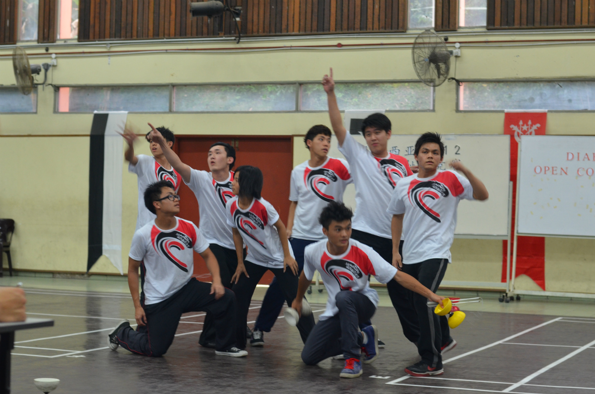
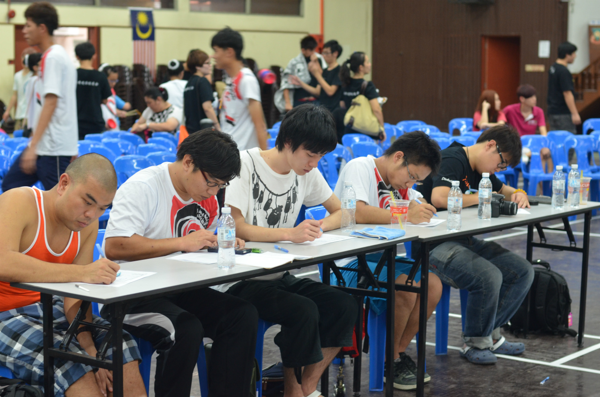
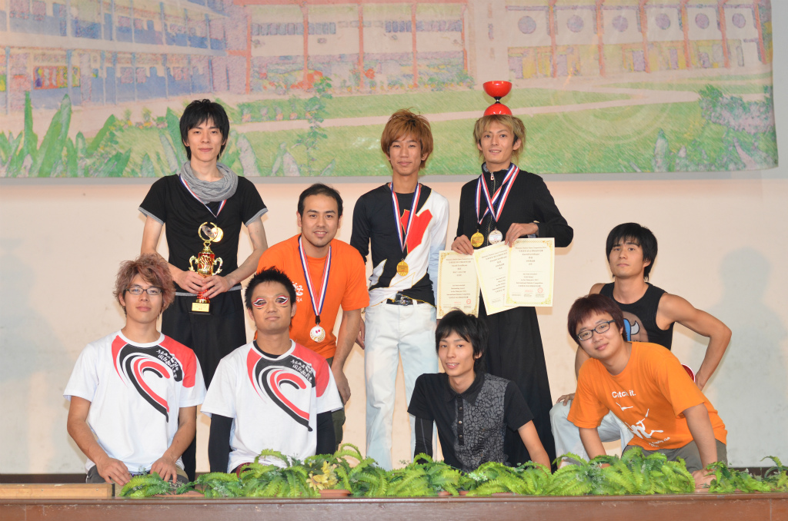
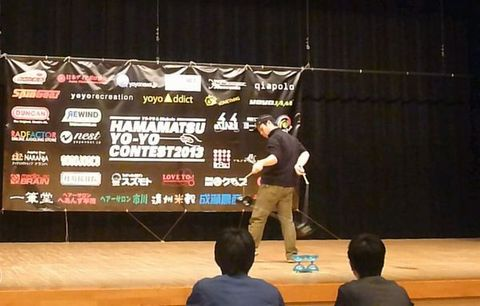

日本ディアボロ協会公式ブログ始まりました！
日本ディアボロ協会公式ブログが始まりました。
より早く皆様に情報を提供するためのブログとなっています。
これからウェブサイト、ツイッター、Facebookとともにご利用をお願いいたします。
保全アーカイブ・非公開
サーバーからファイルが失われ、データベースにだけ残っていた協会公式ブログの記事を、 読める形に復元したものです。大会告知、採点規則の改定、アジアカップの結果報告など、 現行サイトの「更新情報」より前の活動記録にあたります。
日本ディアボロ協会公式ブログが始まりました。
2013年度全日本ディアボロ競技会を開催するにあたり、採点規則を変更いたしました。
2013年度全日本ディアボロ競技会を開催するにあたり、採点規則を変更いたしました。
http://diabolo.jp/PDF/JDA_rule.pdf
競技会は下記のような場になることを目的としています。
・選手の育成
・技の開発、応用を促進する場
・演技の開発、応用を促進する場
・選手、一般観客問わず楽しむことの出来る場
現在、世界各国でいろいろなシステムが採用されています。
そのなか日本ディアボロ協会では競技会において採点規則を試行錯誤を重ね、より目的に沿ったものとしていきたいと思っております。
さて、今回の採点方式についての変更による注意点を簡易的に紹介したいと思います。
詳しくはディアボロ競技採点規則をご覧ください。
・演技時間の過不足に対する減点の明確化
・演技スペースから場外に出ることに対しての減点の明確化
・演技スペースの拡大（オーバーオールクラスのみ）
・演技開始時は静止した状態から始めなければならない。（演技開始時ディアボロに回転をかけてはいけない）
・選手の動きだしを演技開始のタイミングとする。（楽曲再生後20秒間の余裕がある。）
・楽曲が鳴り止むと演技終了とみなされる。(ただし、制限時間を超えている場合減点のみ採点が継続される)
・各部門における採点項目、配分の変更。
・基礎点の要素を満たす例：3ディアボロ（ロウとトス）
・チャレンジクラス、4ディアボロロウ部門において、最後に投入するディアボロの色は他の3個と異なる色にしなければならない。
いかがでしょうか。
不明な点、明確にしておきたい点があれば、全日本ディアボロ競技会ウェブサイトのお問い合わせページよりご連絡ください。
http://diabolo.jp/alljapan/inquiry.html
日本ディアボロ協会 浦和
2012年12月22日、23日に
マレーシア国際ディアボロ大会（Diabolo Malaysia Open Competition）
が開かれ、日本ディアボロ協会も審査員及び選手派遣という形で後援しました。
日本からは9名の選手が参加しました。（浦和、斎藤、野中の3名は審査員を兼任）
香港や台湾の選手も出場し、また日本ではまだ少ない小学生の演技やチームの演技等、大会は大盛り上がりでした。

審査員をつとめる浦和、野中

日本人選手結果
公開個人部門(シニア)
1位 亀井 大輝
3位 野中 葵
1ディアボロ固定軸部門
1位 齋藤 哲範
2ディアボロ部門
1位 亀井 大輝
2位 安部 弘紀
3位 渡邉 隼人
3ディアボロ部門
1位 野中 葵
1ディアボロベアリング部門
1位 安部 弘紀
2位 亀井 大輝
3位 小林 典史

今後も海外大会の開催情報、結果等をブログ上で伝えていきたいと考えています！
日本ディアボロ協会 齋藤
2012年12月22日、23日に
マレーシア国際ディアボロ大会（Diabolo Malaysia Open Competition）
が開かれ、日本ディアボロ協会も審査員及び選手派遣という形で後援しました。
日本からは9名の選手が参加しました。（浦和、斎藤、野中の3名は審査員を兼任）
香港や台湾の選手も出場し、また日本ではまだ少ない小学生の演技やチームの演技等、大会は大盛り上がりでした。
審査員をつとめる浦和、野中
日本人選手結果
公開個人部門(シニア)
1位 亀井 大輝
3位 野中 葵
1ディアボロ固定軸部門
1位 齋藤 哲範
2ディアボロ部門
1位 亀井 大輝
2位 安部 弘紀
3位 渡邉 隼人
3ディアボロ部門
1位 野中 葵
1ディアボロベアリング部門
1位 安部 弘紀
2位 亀井 大輝
3位 小林 典史
今後も海外大会の開催情報、結果等をブログ上で伝えていきたいと考えています！
日本ディアボロ協会 齋藤
全日本ディアボロ競技会も近づいてきておりますが、一つ別の話題をさせていただきたいと思います。
新採点規則の変更点において混乱が起きているようなので改めて詳しく書かせていただきます。
2013年4月27日、28日に、
浜松ヨーヨーコンテスト2013
が静岡県浜松市で開催されました。
浜松ヨーヨーコンテスト2013ホームページ
http://hamacon2013.web.fc2.
ディアボロ部門結果（PDF）
http://hamacon2013.web.fc2.
国内のヨーヨーの大会では珍しく、ディアボロ部門が存在し、
ディアボロ部門には計17名の選手が出場し、

ディアボロ部門のジャッジは、日本ディアボロ協会から齋藤、
日本ディアボロ協会 亀井
2013年5月25日、現在世界で最も権威のあるディアボロ大会、PEH(體健盃)が台湾の台北市で開催されました。
日本からは3名の選手が出場しました。
公開個人男子部門（16歳以上 31名が出場 10位以上が入賞）
6位 渡邉隼人選手
7位 亀井大輝選手
8位 野中葵選手
バトル部門
ホライゾン(vertax) 1位 亀井大輝選手
1ディアボロ 3位 亀井大輝選手
2ディアボロ 2位 野中葵選手 同率2位 渡邉隼人選手 3位 亀井大輝選手
3ディアボロ 1位 野中葵選手
4ディアボロハイトス部門 2位 野中葵選手
動画は公開男子個人部門（16歳以上）優勝者の吳啟銘選手です。
http://www.youtube.com/embed/wlJrYqPxLNU
15歳以下の青少年個人部門では、5名以上の選手が4ディアボロウィンドミルに挑戦するなど、全体的にレベルの向上が感じられました。
また、今年からバトル部門が開催され、去年までのプロップとは異なる趣きを見せました。
日本ディアボロ協会 亀井
2013年5月25日、現在世界で最も権威のあるディアボロ大会、PEH(體健盃)が台湾の台北市で開催されました。
日本からは3名の選手が出場しました。
公開個人男子部門（16歳以上 31名が出場 10位以上が入賞）
6位 渡邉隼人選手
7位 亀井大輝選手
8位 野中葵選手
バトル部門
ホライゾン(vertax) 1位 亀井大輝選手
1ディアボロ 3位 亀井大輝選手
2ディアボロ 2位 野中葵選手 同率2位 渡邉隼人選手 3位 亀井大輝選手
3ディアボロ 1位 野中葵選手
4ディアボロハイトス部門 2位 野中葵選手
動画は公開男子個人部門（16歳以上）優勝者の吳啟銘選手です。
http://www.youtube.com/watch?v=wlJrYqPxLNU&feature=player_embedded
15歳以下の青少年個人部門では、5名以上の選手が4ディアボロウィンドミルに挑戦するなど、全体的にレベルの向上が感じられました。
また、今年からバトル部門が開催され、去年までのプロップとは異なる趣きを見せました。
日本ディアボロ協会 亀井
昨年行った東京国際ディアボロ競技会を本年度の開催が決定しました。
それに伴い変更点等の決定事項がいくつかございますのでここに報告させて頂きます。
昨年行った東京国際ディアボロ競技会を本年度の開催が決定しました。
日本ディアボロ協会は、国内を中心としたディアボロの普及、発展をはかり、並びに国際交流を行うことを目的とします。
また、この目的を達成するべく、以下の活動を行います。
(1) ディアボロの競技会、講習会等のイベント開催・後援
(2) ディアボロの選手、審査員、パフォーマー等の育成・支援
(3) ディアボロの技、動きおよび競技規則等の制定
(4) ディアボロに関連する印刷物、教本、ビデオ等の企画・作成・監修
(5) その他上記目的を達成するべく必要な活動
該当ウェブサイト及び日本ディアボロ協会が主催するイベントは右サイドバーのリンクより御覧ください。
諸事情によりブログが移行されました。
過去の投稿は全てこちらに移行されます。
よろしくお願いいたします。
さて、東京国際ディアボロ競技会2013まで残り約1ヶ月と差し迫ってきました。
選手登録は7月19日金曜日24:00までとなっております。お気をつけください。
日本ディアボロ協会 浦和
日本ディアボロ協会の野中葵がJJF2013のチャンピオンシップ男子個人部門の映像予選を通過しました。
JJF2013 in Shizuoka
http://www.juggling.jp/jjf/jjf2013/jp/
Japan Juggling Festival ( JJF ) とは日本ジャグリング協会主催による日本最大のジャグリングのコンベンションです。
チャンピオンシップ決勝は10月12日～14日の3日間の日程のうちの初日、10月12日(土)に開催されます。
野中葵といえば2ディアボロ・3ディアボロの独創的かつ高難度な技の数々で有名なディアボロプレイヤーです。
彼のJJFチャンピオンシップでの活躍に日本中のディアボロプレイヤーの期待が高まっています。
日本ディアボロ協会 亀井
皆様、ディアボロを楽しんでおられるでしょうか。あっという間に涼しくなり、練習をしやすい時期となりました。存分に練習しましょう。
さて、日本ディアボロ協会では、以前より企画案にあった、ディアボロ検定を10月より始動しました。
ディアボロの普及およびプレイヤーの目標となることを趣旨としています。5段階の等級、5級(グリーン)、4級(ブルー)、3級(ブロンズ)、2級(シルバー)、1級(ゴールド)を用意しており、1級を獲得し暁には一人前といえるような検定とする予定です。
皆様ふるって受験していただきたいと思います。
合格者には合格証書(希望者)が授与されます。
検定は日本ディアボロ協会の主催イベントおよび、後援イベント等で行われ、その有無は事前にホームページ、twitter等で告知されます。
日本ディアボロ協会 浦和
遅まきながら 皆様、新年あけましておめでとうございます。
本年も日本ディアボロ協会一同、力の限り尽くしたいと思いますゆえ、よろしくお願いいたします。
2014年 第三回全日本ディアボロ選手権大会の日程および選手登録期間が発表されました。下記ウェブサイトよりご確認ください。
http://diabolo.jp/alljapan/
また、本大会より演技順について「オーダーポイント制」を導入することが決定いたしました。オーダーポイント制度は過去の大会の成績を選手の演技順に反映させる制度です。
日本ディアボロ協会では選手の皆様・お客様により競技をお楽しみいただけるよう様々な試みを行っております。
詳細はディアボロ競技採点規則 第4版 よりご確認ください。
http://www.diabolo.jp/rule.html
日本ディアボロ協会 浦和
2014年4月19日、20日に
第九回體健盃(PEH CUP) 兼 第一回ディアボロアジアカップ
が台湾の台北市で開催されました。
日本からは11名の選手が出場しました。
本大会ではシード権を持つ選手及びビデオ予選を通過した選手によって順位が競われ、前年にも増して激しい戦いとなりました。
日本人選手結果
【1ディアボロ部門】
1位 亀井大輝
2位 高野勝
4位 鳥居大幹
5位 渡邊隼人
6位 青木直哉
7位 鳥居岳史
【2ディアボロ部門】
1位 野中葵
3位 渡邊隼人
5位 鳥居岳史
7位 亀井大輝
8位 鳥居大幹
【3ディアボロバトル部門】
2位 野中葵
【4ディアボロハイトス耐久部門】
3位 齋藤哲範
【ジュニア男子個人総合部門】
6位 鳥居大幹
【男子個人総合部門】
2位 渡邊隼人
4位 青木直哉
5位 齋藤哲範
10位 亀井大輝
日本ディアボロ協会 野中
2014年5月24日、25日に
第三回MOYOSTAGE
が台湾の最南端、高雄市で開催され、日本からは10名の選手が出場しました。
MOYOSTAGE2014ホームページ
http://2014moyostage.blogspot.jp/
MOYOSTAGEはディアボロとヨーヨーの国際大会として2012年に始まり、今年で三回目の開催となりました。本大会では従来の大会とは異なった、クリッカーを用いた採点方式が取り入れられました。
【1ディアボロ部門】
1位 齋藤哲範
4位 磯部拓海
5位 亀井大輝
6位 宮澤海輝
7位 工藤正景
【2ディアボロ部門】
2位 野中葵
6位 工藤正景
9位 富田輝
【3ディアボロ部門】
1位 野中葵
【vertax（垂直軸）部門】
1位 亀井大輝
3位 工藤正景
5位 富田輝
【男子個人総合（All Diabolo）部門】
2位 亀井大輝
3位 齋藤哲範
4位 野中葵
12位 工藤正景
【女子個人総合（All Diabolo）部門】
3位 田中玲衣
【団体部門】
3位 TATA-BOX (田中玲衣、田久晶子)
動画は男子個人総合部門優勝者の鄭湧蒼選手です。
https://www.youtube.com/watch?v=gYGawJPhpuM
日本ディアボロ協会 野中
本年度も東京国際ディアボロ競技会2014を開催致します。
名称：東京国際ディアボロ競技会2014
日程：2014年8月12〜15日
会場：文京江戸川橋体育館競技場(12日〜14日)
BumB 東京スポーツ文化館競技場(15日)
主催：日本ディアボロ協会
協賛・後援：未定
選手登録期間：2014年6月13日 0:00〜2014年7月12日 24:00
概要及び暫定スケジュールはこちらからご確認ください。
決定事項はホームページに順次更新していきますので、逐次ご確認ください。
○出場を希望される方は、概要をよくお読みの上、こちらから選手登録をおこなってください。
本年度も海外選手からの問い合わせが多く、昨年よりもさらに多くの選手の出場が期待されています。
皆様の出場及びご来場を心よりお待ちしております。
東京国際ディアボロ競技会ウェブサイト
URL: http://diabolo.jp/TIDC/
日本ディアボロ協会 野中
本日2015年1月25日、最新版のディアボロ競技採点規則(第5版)を発行致しました。
主な変更点は以下の通りです。
・1.1.項 オーバーオールクラスに高校生男子個人総合部門、女子個人総合ジュニア部門を新設。またそれに伴う男子個人総合ジュニア部門、女子個人総合部門の出場資格の変更。
18歳以下の男子高校生は男子個人総合部門、高校生男子個人総合部門への出場資格があり、出場部門を選択することが可能です。
なお、同一人物が男子個人総合部門、高校生男子個人総合部門両部門へ出場することはできませんのでご注意ください。
また、女子個人総合ジュニア部門の新設により、女子選手はそれぞれ年齢により16歳以上は女子個人総合部門、15歳以下は女子個人総合ジュニア部門へ出場することが可能となります。
・2.1.項 スペシャリストクラスにおいて男子1ディアボロ水平軸部門を廃止、男子1ディアボロ水平(固定)軸部門、男子1ディアボロ水平(ベアリング)軸部門を新設。
従来の男子1ディアボロ水平軸部門を使用ディアボロにより2つの部門に分割致しました。男子1ディアボロ水平(固定)軸部門では固定軸のディアボロのみを、男子1ディアボロ水平(ベアリング)軸部門ではベアリング軸のディアボロのみを使用可能となります。
・3.1.項 チャレンジクラスに男子1ディアボロ縄跳び部門、女子1ディアボロ縄跳び部門を新設。
東京国際ディアボロ競技会2014で試験的に実施した1ディアボロ縄跳び部門を新設致しました。詳細ルールはディアボロ競技採点規則をご確認ください。
その他細かい変更点がございますので選手の皆様は必ず最新版採点規則をご熟読ください。
日本ディアボロ協会 野中
本年度も第四回全日本ディアボロ選手権大会を開催致します。
名称：第四回全日本ディアボロ選手権大会
日程：2015年3月(29日)30日～31日
会場：江戸川橋体育館 競技場
主催：日本ディアボロ協会
協賛・後援：未定
選手登録期間：2015年1月30日 0:00～2015年2月28日 23:59
概要はこちらからご確認ください。
○出場を希望される方は、概要をよくお読みの上、こちらから選手登録をおこなってください。
◯採点規則は2015年1月25日発行の第5版を採用しますので、出場をご検討の選手は必ずご確認ください。
皆様の出場及びご来場を心よりお待ちしております。
全日本ディアボロ選手権大会ウェブサイト
URL: http://diabolo.jp/alljapan/
日本ディアボロ協会 野中
2015年5月23日、24日に
「第十回體健盃(PEH CUP) 兼 第二回ディアボロアジアカップ」
が台湾の台北市にて開催されました。
日本からはシード権を持つ選手、ビデオ予選を突破した選手合わせて18名の選手が出場しました。
以下日本人選手の結果です。
【男子個人総合部門】
4位 齋藤哲範
5位 野中葵
6位 渡邊隼人
8位 亀井大輝
【女子個人総合部門】
4位 須田恵梨華
【男子青少年個人部門】
6位 鳥居大幹
7位 鳥居岳史
【1ディアボロ固定軸部門】
1位 大屋幸長
5位 齋藤哲範
7位 渡辺英也
【1ディアボロベアリング軸部門】
1位 亀井大輝
2位 富田亮平
3位 山田純
5位 渡邊隼人
6位 高野勝
7位 安部弘紀
9位 田中友康
【2ディアボロ固定軸部門】
2位 田中友康
3位 田多加津輝
4位 野中葵
【2ディアボロベアリング軸部門】
3位 田中俊
4位 亀井大輝
6位 渡邊隼人
8位 安部弘紀
10位 鳥居大幹
【3ディアボロバトル部門】
10位 野中葵
【4ディアボロハイトス部門】
4位 齋藤哲範
5位 野中葵
動画は1ディアボロベアリング部門優勝者の亀井大輝選手です。
https://www.youtube.com/watch?v=4fb-nQJpsYQ
日本ディアボロ協会 野中
本年度も東京国際ディアボロ競技会2015を開催致します。
名称：東京国際ディアボロ競技会2015
日程：2015年8月7日～11日
会場：江戸川橋体育館 競技場
主催：日本ディアボロ協会
協賛・後援：未定
選手登録期間：2015年6月16日 0:00～2015年7月7日 23:59
概要はこちらからご確認ください。
○出場を希望される方は、概要をよくお読みの上、こちらから選手登録をおこなってください。
◯採点規則は2015年1月25日発行の第5版を採用しますので、出場をご検討の選手は必ずご確認ください。
皆様の出場及びご来場を心よりお待ちしております。
東京国際ディアボロ競技会ウェブサイト
URL: http://diabolo.jp/TIDC/index.html
日本ディアボロ協会 野中
本日2016年2月6日、最新版のディアボロ競技採点規則(第六版)を発行致しました。
主な変更点は以下の通りです。
・2.1.項 スペシャリストクラスにおいて2ディアボロ部門を廃止、2ディアボロ(固定)部門、2ディアボロ(ベアリング)部門を新設。
従来の2ディアボロ部門を使用ディアボロにより2つの部門に分割致しました。2ディアボロ(固定)部門では固定軸のディアボロのみを、2ディアボロ(ベアリング)部門ではベアリング軸のディアボロのみを使用可能となります。
また、それに伴い他部門の名称変更を行いました。
男子1ディアボロ水平(固定)軸部門→男子1ディアボロ水平軸(固定)部門
男子1ディアボロ水平(ベアリング)軸部門→男子1ディアボロ水平軸(ベアリング)部門
その他細かい変更点がございますので選手の皆様は必ず最新版採点規則をご熟読ください。
日本ディアボロ協会 野中
本年度も第五回全日本ディアボロ選手権大会を開催致します。
名称：第五回全日本ディアボロ選手権大会
日程：2016年3月29日(火)～31日(木)
会場：江戸川橋体育館競技場(29〜30日)、文京スポーツセンター競技場(31日)
主催：一般社団法人日本ディアボロ協会
協賛・後援：未定
選手登録期間：2016年2月10日 0:00～2016年2月29日 23:59
概要はこちらからご確認ください。
◯出場を希望される方は、概要をよくお読みの上、こちらから選手登録をおこなってください。
◯本大会では出場費用を申込期間により2段階に分けております。お早めの申込にご協力ください。
◯競技採点規則は2016年2月6日発行の第六版を採用します。出場をご検討の選手は必ずご確認ください。
皆様の出場及びご来場を心よりお待ちしております。
全日本ディアボロ選手権大会ウェブサイトhttp://diabolo.jp/alljapan/
日本ディアボロ協会 野中
本年度も東京国際ディアボロ競技会2016を開催致します。
名称：東京国際ディアボロ競技会2016
日程：2016年8月12日～16日
会場：江戸川橋体育館競技場
主催：一般社団法人日本ディアボロ協会
協賛・後援：未定
選手登録期間：2016年6月18日 0:00～2016年7月11日 23:59
概要はこちらからご確認ください。
○出場を希望される方は、概要をよくお読みの上、こちらから選手登録をおこなってください。
◯採点規則は2016年2月6日発行の第六版を採用しますので、出場をご検討の選手は必ずご確認ください。
ただし、本競技会では以下の点で変更があります。
① 1.1.6. 団体部門の項について、二名による演技をペア部門、三名から十二名に よる演技を団体部門とする。配点についてはいずれも1.7.2.5. 項に従う。
皆様の出場及びご来場を心よりお待ちしております。
東京国際ディアボロ競技会ウェブサイト
URL : http://diabolo.jp/TIDC/jp/index.html
日本ディアボロ協会 野中
LAA0217648-test の全体エクスポート（2026年9月6日 01:13 取得）に含まれる
wp1_posts・wp2_posts ほかのテーブル。publish）の投稿と固定ページだけを収録し、下書き・ゴミ箱・リビジョンは除いた。/JDA_Weblog（wp1_／「日本ディアボロ協会公式ブログ」）が最初のブログ。/Weblog（wp2_）へ移り、
過去記事も日付を保ったまま取り込まれた。以後2016年6月まで更新されている。本文が参照していた画像は、元のURLではすべて消失していた（404もしくは配信停止）。
Wayback Machine に残っていたものを取得して images/ に保存し、本文の参照先を差し替えている。
http://img.blog.diabolo.jp/20130114_908850.jpg | Wayback Machineから復元 |
http://img.blog.diabolo.jp/20130114_908851.jpg | Wayback Machineから復元 |
http://img.blog.diabolo.jp/20130114_908864.jpg | Wayback Machineから復元 |
http://japandiabolo.img.jugem.jp/20130506_1177083.jpg | Wayback Machineから復元 |
a, b, div, em, img, span, strong, wbr）だけを通し、
style 属性と未知のタグは除いた。内容の文字は変えていない。wp2_users に wp.service.controller.LNook ・
wp.service.controller.AzORp という管理者権限のアカウントが2つある。
メールアドレスが空、登録日時が 0000-00-00 で、通常の作成手順では生まれない。
このブログが第三者に侵入されていた可能性が高い（未確定）。
稼働中の /AJDC/・/OIDC/ には同種のアカウントは無いことを確認済み。